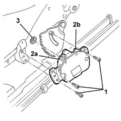
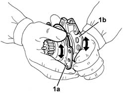

7045A36 drivers seat manual height adjustment device - r r
- Path
- Procedures > 70 FITTINGS > 7045 FRONT SEATS > 7045A front seat assembly > 7045A36 drivers seat manual height adjustment device - r r
- Kind
- repair procedure (removal / refitting; the operation number is the code)
- Applies to
- all engines; all production periods
- Interactive page
- https://sloeber94.github.io/elrnDB-a147/en/#/3025845
Applies to: all engines; all production periods
 Removing
Removing
 Refitting
RefittingUsing the adjustment lever, lift the seat to the end of its travel.
7045A43 seat exterior guard - r r
1. Unscrew the bolts
2. Release toothed wheel (2b) from the toothed sector and remove manual device (2b) for adjusting seat height.
3. Recover the bush.

Applies to: all engines; all production periods
Refitting
RemovingCheck that the manual seat height adjustment device is not damaged.
Fit the bush.
Fit the device in its seating.
If the toothed wheel does not line up with the toothed sector, turn retaining plate (1a) as far as necessary by hand in relation to rotation plate (1b).

Applies to: all engines; all production periods
Tighten the screws.
7045A43 seat exterior guard - r r
Test the operation of the manual seat height adjustment device.